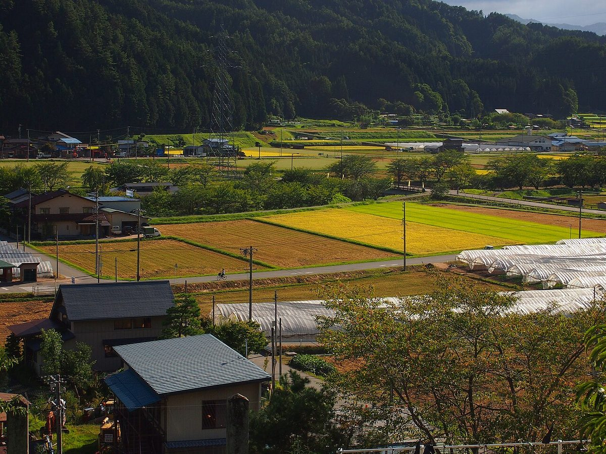
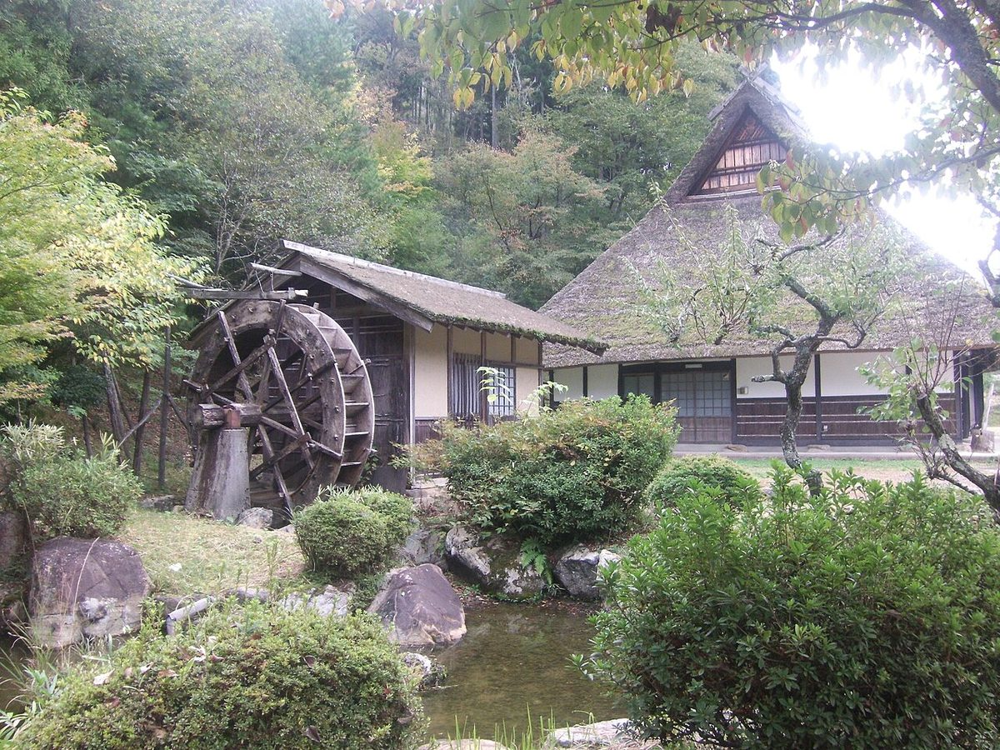
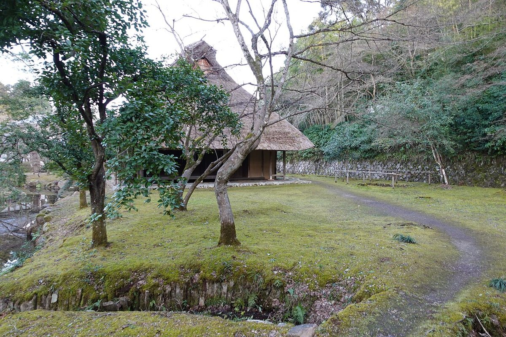

急がない時間を、里山の古民家で。
※このコンセプトは制作側の案であり、お店の公式な説明ではありません。

ゆるやかな時間(案)
里山の風景に囲まれた古民家という場所柄から、「ゆるやかな時間」という言葉を軸にした見せ方を考えました。余白を広くとり、一部に縦書きを用いることで、急がずに過ごす時間の流れを表現しています。
お店の雰囲気や考え方の実際については、お電話またはInstagramでご確認ください。
写真は日本の古民家風景のイメージです。店舗の実際の建物ではありません。


建物の詳細は準備中です。掲載している写真はイメージで、実際の建物とは異なります。
- 店名
- 丹波篠山古民家カフェ ことこと
- 業態
- 古民家カフェ
- 所在地
- 兵庫県丹波篠山市塩岡578
- 電話
- 070-5653-5606
- 公式Instagramを開く
- 営業時間
- 準備中(お問い合わせください)
- 定休日
- 準備中(お問い合わせください)
- スタッフ
- 準備中(お問い合わせください)
- 建物の詳細
- 準備中(お問い合わせください)